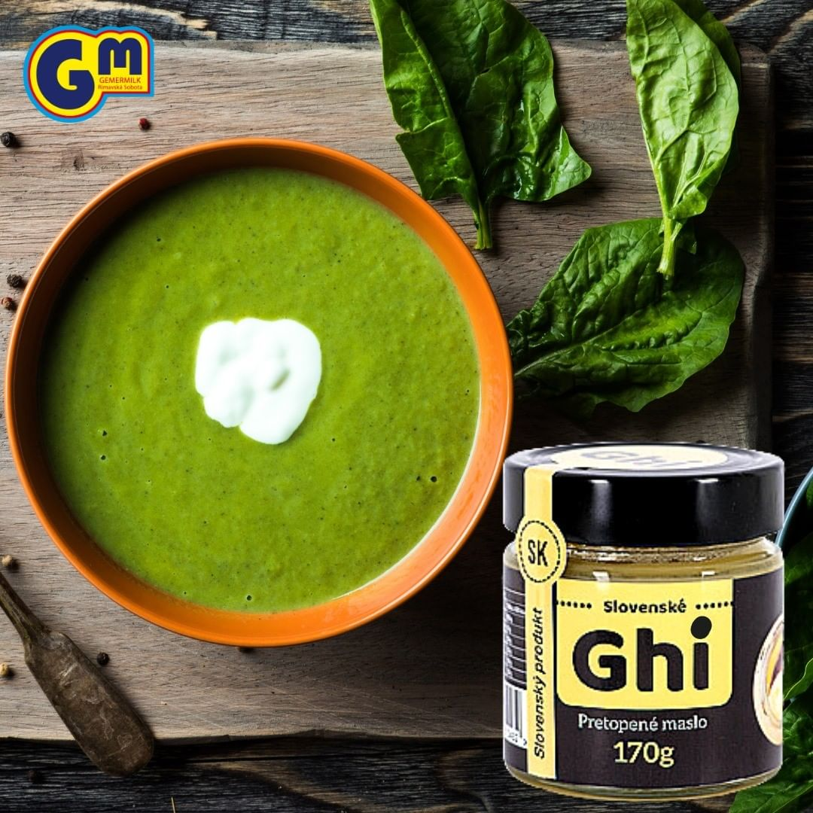

Špenátová polievka podľa @gemermilk.sk — Normy Jedál
Doprajte si zdravú zmenu v jedálničku. Vyskúšajte lahodnú špenátovú polievku 🥬 s ghí maslom. Budete potrebovať:
• 1 kg listového špenátu
• 1 cibuľa
• 1 strúčik cesnaku
• Citrónová šťava
• Ghí maslo
• Soľ
• 1 dcl mlieka
Opražte na ghí masle cibuľku, pridajte listy špenátu a pretlačený strúčik cesnaku. Zmes varte do zmäknutia. Následne pridajte soľ, mlieko a trochu citrónovej šťavy podľa chuti. Polievku rozmixujte a hotovo.
Môžete podávať 😊
🌐 gemermilk.sk/produkt/ghi-maslo/
#gemermilk #slovensko #slovakia #tesco #tescosk #smotana #kyslasmotana #sladkasmotana #smotananaslahanie #bratislava #kosice #zilina #poprad #bystrica #trnava #food #poctiveslovenske #freshfood #kvalita #mliecnevyrobky #domacepotraviny #zdravepotraviny #billa #billasvk #billask #billaslovensko #recepty #spenatovapolievka #špenát